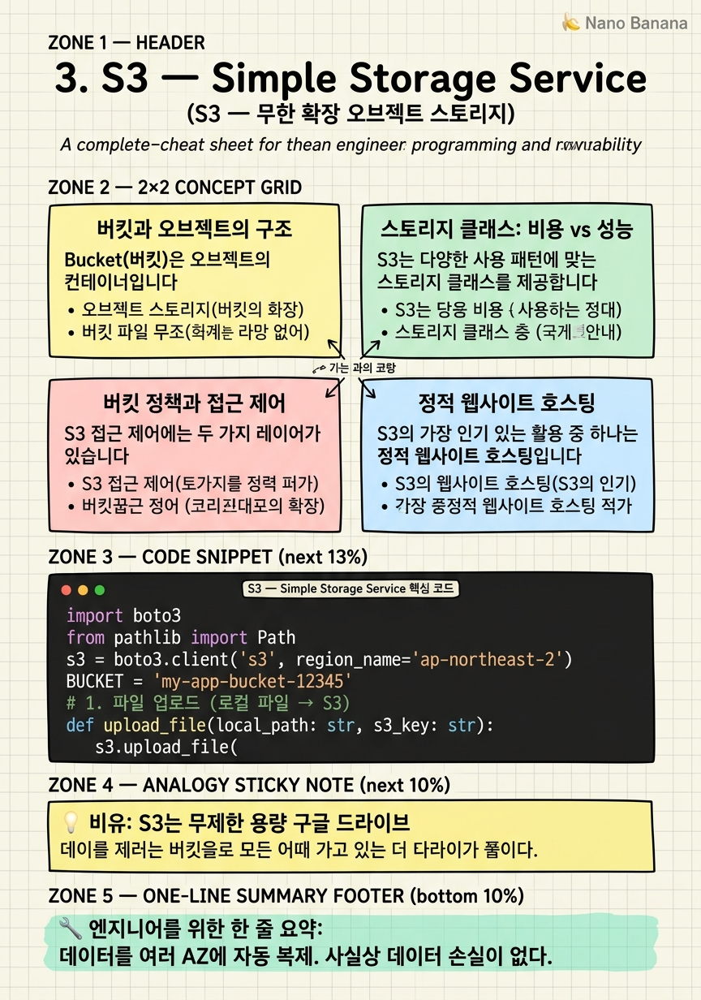

S3 — Simple Storage Service

🎯 학습 목표
- S3 버킷을 생성하고 파일을 업로드·다운로드할 수 있다
- 버킷 정책으로 퍼블릭 접근을 제어할 수 있다
- S3로 정적 웹사이트를 호스팅할 수 있다
- 스토리지 클래스(Standard, IA, Glacier)의 차이와 비용을 이해한다
- boto3로 파일 업로드·다운로드를 자동화할 수 있다
Amazon S3(Simple Storage Service)는 AWS에서 가장 오래되고(2006년 출시) 가장 많이 쓰이는 서비스입니다. S3는 오브젝트 스토리지입니다 — 파일 시스템처럼 디렉토리 구조가 없고, 모든 데이터를 'Bucket + Key' 조합으로 저장합니다. 예를 들어 my-bucket/photos/2024/01/sunset.jpg에서 my-bucket이 버킷이고 photos/2024/01/sunset.jpg가 키(key)입니다.
S3의 놀라운 특징은 99.999999999%(11 nines)의 내구성입니다. 저장된 파일이 1년에 손실될 확률이 0.000000001%라는 의미입니다. 이 수치는 1,000만 개의 파일을 저장했을 때 1만 년에 한 번 파일이 손실된다는 뜻입니다. 이런 내구성은 데이터를 자동으로 여러 AZ에 복제하기 때문에 달성됩니다.
S3의 핵심 활용 사례:
- 정적 웹사이트 호스팅: HTML·CSS·JavaScript·이미지를 S3에 올리면 별도 서버 없이 웹사이트 운영 가능 - 데이터 레이크: 수 PB의 원시 데이터를 저렴하게 보관하고 Athena·EMR로 분석 - 백업 및 아카이브: EC2 스냅샷, RDS 백업 자동 저장 - 미디어 저장소: 이미지·동영상 원본 저장 후 CloudFront로 배포
핵심 내용
버킷과 오브젝트의 구조
Bucket(버킷)은 오브젝트의 컨테이너입니다. 버킷 이름은 전 세계에서 유일해야 하며, 한 번 만들면 이름을 변경할 수 없습니다. 버킷을 만들 때 Region을 지정하고, 그 버킷의 데이터는 해당 Region 안의 여러 AZ에 복제됩니다.
Object(오브젝트)는 버킷에 저장되는 데이터의 단위입니다. 각 오브젝트는 다음으로 구성됩니다:
- Key: 오브젝트의 고유 식별자 (파일 경로처럼 사용) - Value: 실제 데이터 (0 바이트 ~ 5 TB) - Metadata: 오브젝트에 대한 부가 정보 (Content-Type, 커스텀 태그 등) - Version ID: 버전 관리가 활성화된 경우의 버전 식별자
S3에는 진짜 폴더 개념이 없습니다. photos/2024/sunset.jpg라는 키를 사용하면 콘솔에서는 마치 폴더 구조처럼 보이지만, 실제로는 슬래시(/)가 포함된 하나의 키 문자열입니다. 이를 '가상 폴더(Virtual Folder)'라고 합니다.
S3 오브젝트에 접근하는 URL 형식:
- https://버킷명.s3.리전.amazonaws.com/키
- 예: https://my-bucket.s3.ap-northeast-2.amazonaws.com/photos/sunset.jpg
기본적으로 모든 버킷과 오브젝트는 Private입니다. 퍼블릭 접근을 위해서는 버킷 정책 또는 ACL 설정이 필요합니다.
스토리지 클래스: 비용 vs 성능
S3는 다양한 사용 패턴에 맞는 스토리지 클래스를 제공합니다. 올바른 클래스 선택은 비용을 크게 절감할 수 있습니다.
| 클래스 | 사용 시나리오 | 최소 저장 기간 | 비용 (상대적) | |---|---|---|---| | S3 Standard | 자주 접근하는 데이터 | 없음 | \[$$ | | **S3 Intelligent-Tiering** | 패턴 불규칙한 데이터 | 없음 |\]$ | | S3 Standard-IA | 가끔 접근 (월 1~2회) | 30일 | $$ | | S3 One Zone-IA | 재생성 가능한 데이터 | 30일 | $ | | S3 Glacier Instant | 분기별 접근 | 90일 | $ | | S3 Glacier Flexible | 아카이브 (수시간 내 복원) | 90일 | ¢ | | S3 Glacier Deep Archive | 장기 보관 (수년) | 180일 | ¢¢ |
S3 Lifecycle Policy를 사용하면 오브젝트의 나이에 따라 자동으로 클래스를 전환할 수 있습니다. 예: '생성 후 30일은 Standard, 이후 60일은 Standard-IA, 90일 이후는 Glacier Deep Archive로 이동'.
버킷 정책과 접근 제어
S3 접근 제어에는 두 가지 레이어가 있습니다. IAM Policy는 사용자/Role이 S3에 무엇을 할 수 있는지 제어하고, Bucket Policy는 버킷 자체에 부착되어 누가 버킷에 접근할 수 있는지 제어합니다.
Bucket Policy 예시 — 특정 버킷을 퍼블릭 읽기로 열기 (정적 웹사이트 호스팅 시 사용):
`json
{
"Version": "2012-10-17",
"Statement": [{
"Sid": "PublicReadGetObject",
"Effect": "Allow",
"Principal": "*",
"Action": "s3:GetObject",
"Resource": "arn:aws:s3:::my-website-bucket/*"
}]
}
`
Principal: "*"는 모든 사람(인터넷)을 의미합니다. 이 정책과 함께 Block Public Access 설정을 해제해야 합니다.
S3 Versioning을 활성화하면 같은 키로 업로드할 때마다 버전 ID가 부여됩니다. 실수로 덮어쓴 파일도 이전 버전으로 복구할 수 있습니다. 단, 버전마다 별도 스토리지를 사용하므로 비용이 증가합니다. Lifecycle Policy로 오래된 버전을 자동 삭제하는 것이 좋습니다.
S3 Transfer Acceleration은 CloudFront의 글로벌 엣지 네트워크를 통해 멀리 있는 사용자가 S3에 업로드할 때 속도를 높여주는 기능입니다. 한국 사용자가 미국 버킷에 업로드할 때 유용합니다.
정적 웹사이트 호스팅
S3의 가장 인기 있는 활용 중 하나는 정적 웹사이트 호스팅입니다. React·Vue·Next.js 빌드 결과물, 혹은 단순한 HTML/CSS/JS 파일을 S3에 올리면 별도 웹 서버(Apache, Nginx) 없이 웹사이트를 운영할 수 있습니다.
설정 단계:
1. 버킷 생성 (버킷 이름을 도메인과 동일하게 하면 편리)
2. Static website hosting 활성화 (인덱스 문서: index.html, 오류 문서: error.html)
3. Block Public Access 해제
4. Bucket Policy로 s3:GetObject 허용
5. S3 웹사이트 엔드포인트 확인: http://버킷명.s3-website.리전.amazonaws.com
주의: S3 웹사이트 엔드포인트는 HTTP만 지원합니다. HTTPS를 사용하려면 CloudFront를 앞에 두어야 합니다(8장에서 다룹니다). 또한 서버 사이드 렌더링(SSR)은 불가능합니다 — S3는 파일을 그대로 서빙할 뿐, 코드를 실행하지 않습니다.
💡 비유로 이해하기
S3를 이해하는 가장 직관적인 비유는 구글 드라이브의 프로그래밍 가능한 버전입니다. 구글 드라이브처럼 파일을 올리고 내려받을 수 있지만, 용량 제한이 없고, 인터넷에서 직접 URL로 접근할 수 있으며, 코드로 자동화할 수 있습니다.
버킷은 구글 드라이브의 '공유 드라이브', 오브젝트는 그 안의 파일입니다. 단, 구글 드라이브와 달리 '폴더'는 실제로 존재하지 않습니다. 사진/2024/여행.jpg라는 긴 파일명을 사용하는 것입니다.
스토리지 클래스는 창고의 보관 서비스와 같습니다. 자주 꺼내야 하는 물건(Standard)은 창고 입구에 바로 접근 가능한 위치에 두고, 연간 한 번 볼까 말까 하는 물건(Glacier)은 창고 깊숙이 넣어두어 비용을 절약합니다. 단, Glacier에서 꺼내려면 수 시간에서 수일이 걸릴 수 있습니다.
💻 코드 예시
boto3의 S3 클라이언트를 사용하면 파일 업로드·다운로드·버킷 목록 조회 등을 자동화할 수 있습니다. 아래 예제는 파일 업로드와 Presigned URL 생성(임시 공개 URL) 실용적인 패턴을 보여줍니다.
import boto3
from pathlib import Path
s3 = boto3.client('s3', region_name='ap-northeast-2')
BUCKET = 'my-app-bucket-12345'
# 1. 파일 업로드 (로컬 파일 → S3)
def upload_file(local_path: str, s3_key: str):
s3.upload_file(
Filename=local_path,
Bucket=BUCKET,
Key=s3_key,
ExtraArgs={'ContentType': 'image/jpeg'} # MIME 타입 지정
)
print(f"✅ 업로드 완료: s3://{BUCKET}/{s3_key}")
upload_file('local_image.jpg', 'uploads/2024/image.jpg')
# 2. 파일 다운로드
s3.download_file(
Bucket=BUCKET,
Key='uploads/2024/image.jpg',
Filename='downloaded.jpg'
)
# 3. Presigned URL 생성 (비공개 파일의 임시 공개 URL, 1시간 유효)
url = s3.generate_presigned_url(
ClientMethod='get_object',
Params={'Bucket': BUCKET, 'Key': 'uploads/2024/image.jpg'},
ExpiresIn=3600 # 초 단위: 1시간
)
print(f"임시 URL (1시간): {url}")
# 4. 버킷 내 파일 목록 조회
response = s3.list_objects_v2(Bucket=BUCKET, Prefix='uploads/')
for obj in response.get('Contents', []):
print(f" {obj['Key']} ({obj['Size']:,} bytes)")upload_file의 ExtraArgs로 Content-Type을 지정하면 브라우저가 파일을 올바른 형식으로 처리합니다. Presigned URL은 비공개 버킷의 파일을 일정 시간 동안 공개적으로 접근 가능하게 하는 강력한 기능입니다. 사용자가 직접 S3에 업로드하는 경우(presigned POST)나 특정 파일을 임시로 공유할 때 자주 사용됩니다.
🏭 현업에서의 평가
✅ 시니어가 보는 것
- IAM Policy vs Bucket Policy의 차이를 이해하고 올바르게 선택하는가
- 스토리지 클래스를 데이터 접근 패턴에 맞게 선택하는가
- Multipart Upload나 Transfer Acceleration 같은 성능 기능을 아는가
⚠️ 레드 플래그
- 모든 버킷을 Public으로 설정하는 것이 편하다고 생각함
- 모든 데이터에 S3 Standard를 사용해 불필요한 비용 발생
- 버킷 이름이 전 세계에서 유일해야 함을 모름
🎤 예상 인터뷰 질문
- S3에 1TB의 로그 파일이 쌓여 있을 때 6개월 이상 된 것은 자동으로 Glacier로 이동시키려면 어떻게 설정하겠습니까?
- 비공개 S3 버킷의 파일을 외부 사용자에게 1시간 동안만 공유하려면 어떻게 하겠습니까?
- 같은 리전의 EC2가 S3에 접근할 때 데이터 전송 비용이 발생합니까?
✨ 핵심 요약
11 nines 내구성
데이터를 여러 AZ에 자동 복제. 사실상 데이터 손실이 없다.
버킷 이름은 전 세계 유일
다른 AWS 계정과도 겹치면 안 된다.
기본값은 Private
퍼블릭 접근을 위해서는 명시적 설정이 필요하다.
Presigned URL로 임시 공유
비공개 파일을 일정 시간 동안만 공개하는 가장 안전한 방법.
Lifecycle Policy로 비용 절약
데이터 나이에 따라 자동으로 저렴한 클래스로 이동.
정적 웹사이트 호스팅
서버 없이 React/Vue 빌드 결과물을 배포할 수 있다.
오브젝트 크기 제한
단일 파일 최대 5TB, 단일 PUT API는 5GB. 그 이상은 Multipart Upload 사용.
S3는 오브젝트 스토리지
파일 시스템이 아니다. 폴더는 가상 개념이다.